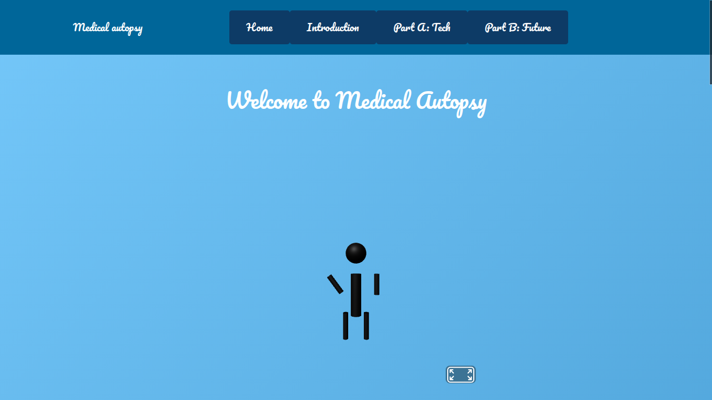

sep10 freedom project
Context
>For my Freedom Project the title is "Medical Autopsy." At the beginning of the school year my teacher told us to choose a topic that interests us. I picked medical autopsy because I want to be a forensic pathologist when I grow up. We had to research different software and hardware technologies related to autopsies, like autopsy saws and ventilators. Later we had to invent our own technology for this topic. I had many ideas but I chose two that made the most sense and that I thought people would find interesting: a memory scanner device and AR glasses. As we learned about tools like Bootstrap, CSS, and how to make our websites look good, I had to pick my own tools. Even though there was many tools such as sass and bulma. I chose AFRAME because I wanted to create a 3D version of my future technology. I made the memory scanner as a USB-like device that would be inserted into a corpse’s head to read their last memories. In the end my website looked really good. I used different shades of blue for the color scheme a cursive font for the titles, and a white and black font for the welcome page. I even made a waving stick man using AFRAME for the 3D part of my site.
Content
For my project I created a website about my ideas for autopsy-related technology. I designed a home page with a welcome message and a cool waving stick man made with AFRAME. I also made pages describing the memory scanner device and AR glasses. The website includes colorful sections with different shades of blue, and I used a fancy cursive font for the titles to make it look interesting. I also added images and videos to explain how my devices work. The main goal was to show what these technologies would look like and how they could help forensic pathologists in the future. I used HTML, CSS, Bootstrap, and AFRAME to build everything and made sure it looked nice and professional
Reflection:
Challenges
One of my biggest challenges was trying to make all the images the same height when I was creating the carousel. I also had trouble with my AFRAME not working at first because I forgot to include the link to the AFRAME library. Many errors appeared because my code was not organized well, which made it hard to find mistakes. Another challenge was figuring out how to make my website look good and how to use all the tools I learned like Bootstrap and CSS, the right way.
Takeaways
From this project I learned that asking for help is very important. My friend told me that I needed to add the AFRAME link to fix my 3D scenes and suggested using iframe to make my website more organized. I also learned that keeping my code neat and organized helps me find and fix mistakes faster. I realized that being patient and asking questions makes a big difference when making a website. It’s okay to make mistakes as long as I learn from them and keep trying.
Next Steps
Next year I want to improve my skills by using more Bootstrap components and making my AFRAME scenes look more advanced and realistic. I also want to make my website more stylish and professional. Since I will learn how to make a game next year I plan to practice more with coding and design so I can create better projects. I am proud of what I made, but I know there is more to learn, and I want to keep improving my skills for the future./p>
link to website
link to blog
